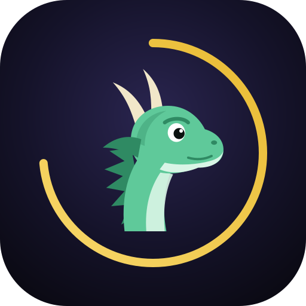

Un parcours par enclos
Indique la sérénité de départ et le niveau visé : l’app calcule l’ordre optimal des étapes (unification, endurance, maturité, amour, XP) et les jauges à poser à chaque fois.

Monture MinuteDOFUS 3.7 · Android & Windows · gratuit
Monture Minute guide chaque enclos étape par étape : quelles jauges activer, combien de carburant mettre, quand revenir. Tu reçois une notification à chaque palier et à chaque fin d’étape, jusqu’à des montures fécondes au niveau voulu.
Dernière version : chargement…
Indique la sérénité de départ et le niveau visé : l’app calcule l’ordre optimal des étapes (unification, endurance, maturité, amour, XP) et les jauges à poser à chaque fois.
Jauges de 200 000, paliers à 80k, 140k et 180k : la durée de chaque étape tient compte du rendement qui baisse quand la jauge se vide.
Changement de palier, jauge vide, étape terminée : tu es prévenu, même l’app fermée sur Android et en arrière-plan sur Windows.
Une fenêtre de 400 px qui tient à côté du jeu, avec l’option « toujours au premier plan » sur Windows. Tout se modifie dans des popups, sans quitter l’écran.
Chaque version est publiée sur GitHub. Windows se met à jour tout seul ; Android te propose le nouvel APK, tes données sont conservées.
Pas de compte, pas de serveur : ton élevage reste sur ton appareil. Le code est ouvert sur GitHub.
Chargement des versions depuis GitHub…